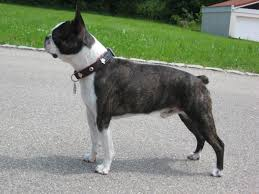
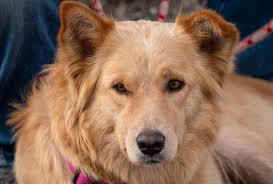

Boston Terrier
Boston Terriers are good family pets. They are very affectionate and are very friendly!
Golden Sheperd
These dogs are very loyal and intelligent. They have traits from both parents breeds, that being the Golden Reteriver and the German Sheperd.